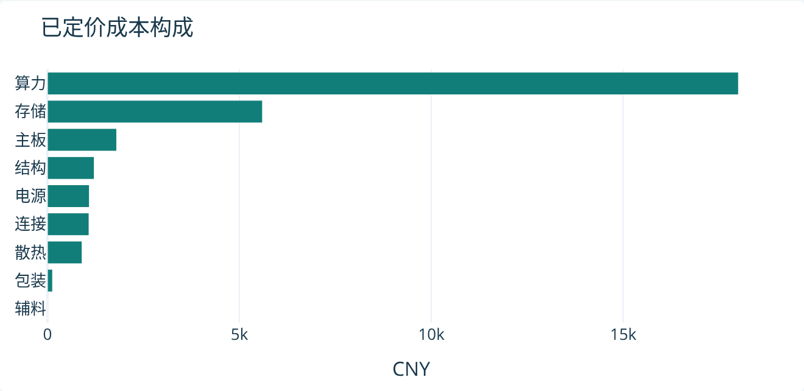

核心优势
自主选择工具
模型读采购目标，选择报价查询、模拟与采购计算。
验收驱动重规划
检查需求、MOQ、库存、预算与锁定分配，再决定修改方案或报告缺口。
采购证据可复算
记录动作、金额和失败原因，导出建议 BOM 与待审批清单。
系统流程
让模型负责规划，让工具给出证据
采购输入BOM · 报价 · 锁定约束
模型选工具JSON Schema 校验
Python 重算拆单 · 阶梯 · 库存
独立验收通过待审批 / 受阻
验收失败时，把结果反馈给模型，最多重规划三次。
虚构 AI BOX 样本 · 20 项物料 / 160 条报价
三种采购压力，三次真实验收
报价上调 20%
少 3,468 元
相对涨价后维持原分配。较涨价前仍高 2.05%，保留锁定料号分配，待审批。100 台缺货
仍缺 40 个
拆单后 160 / 200。已分配小计 268,099.20 元，完整成本留空。目标降本 8%
降幅 0%
现有报价最低 29,822.20 元，未通过预算验收。
已定价成本构成

工作台截图 · 正式提交复现 · 样本报价均为虚构
缺料场景 · 两次验收
历史真实 OpenDev 执行选用 claude-opus-5-5。模型依据首次验收结果改用拆单，实际缺口从 120 个缩小至 40 个。
86 项自动化测试通过。报告可下载为 Excel，并保留未满足约束和审批事项。